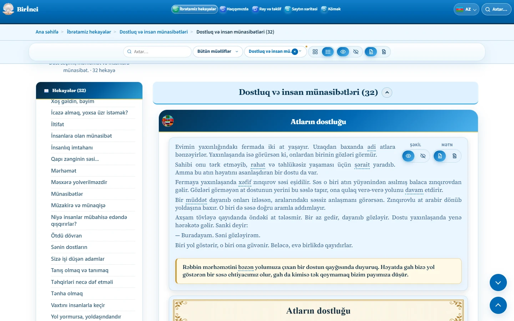

Hekayələrin mətni və illüstrasiyaları
Hekayə başlıqdan, əsas mətndən, ibrət hissəsindən və illüstrasiyadan ibarətdir. İbrət açıq krem rəngli paneldə vurğulanır. Hekayə səhifələrində illüstrasiyalar ilk açılışda görünür; onları görmək üçün əvvəlcə «Şəkli göstər» düyməsinə basmaq lazım deyil.
İllüstrasiyanı gizlətmək üçün «Şəkli gizlət», yenidən göstərmək üçün «Şəkli göstər» düyməsini seçin. Mətnin göstərilməsi və gizlədilməsi üçün ayrıca düymələr var. Mətnlə şəkli eyni vaxtda gizlətmək mümkün deyil: onlardan ən azı biri görünməlidir. Telefonda mətn düymələri göstərilməsə də, mətn yenə də görünür və onu oxumaq mümkündür. Mətni göstər; Mətni gizlət.
Müəllif və mənbə haqqında məlumat verilibsə, həmin məlumatı hekayənin yanında görə bilərsiniz. Eyni ümumi mənbə qeydi bütün hekayələrin altında təkrarlanmır. Redaktə və süni intellektlə hazırlanmış illüstrasiyalar haqqında ümumi qeyd giriş hissəsində verilə bilər. Bu qeyd ayrı-ayrı hekayələrin müəllifi və mənbəyi haqqında məlumatı əvəz etmir.
Hekayəyə keçdikdən sonra brauzerdəki ünvanı kopyalayaraq paylaşa bilərsiniz. Ünvanın sonundakı # işarəsi və hekayə identifikatoru saxlanmalıdır; məsələn, #friendship-of-horses.

